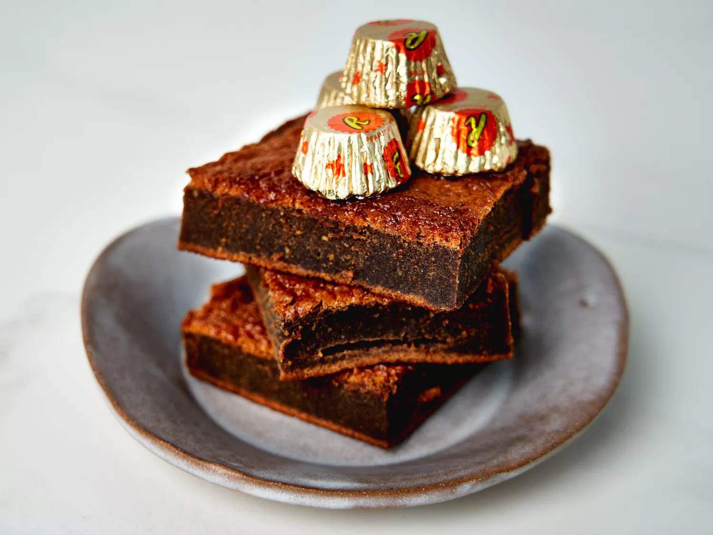

2 Ingredient Reeses Brownies

Description
2 ingredients is all you need for these yummy brownies full of chocolaty
peanut butter flavor.
Ingredients
-
1 (17.6-oz.) bag miniature chocolate peanut butter cups, such as
Reeses®
- 5 large eggs
Steps
-
Preheat oven to 350 degrees F (175 degrees C). Line an 8x8 baking dish
with parchment and lightly coat with cooking spray.
-
Place peanut butter cups in a medium microwave-safe bowl and microwave
in 30 second intervals, stirring in between, about 2 minutes total,
until smooth. Let cool slightly.
-
Using an electric mixer or whisk, beat eggs until frothy . Slowing
drizzle in chocolate while mixing until well incorporated. Pour batter
into prepared pan.
-
Bake in the preheated oven until a toothpick inserted in center comes
out clean, 22 to 26 minutes. Let cool completely before cutting.